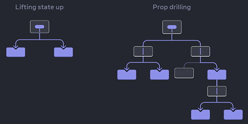

Passing data deeply with Context
Usually, you will pass information from a parent component to a child component via props. But passing props can become verbose and inconvenient if you have to pass them through many components in the middle, or if many components in your app need the same information. Context lets the parent component make some information available to any component in the tree below it — no matter how deep — without passing it explicitly through props.
You will learn:
What “prop drilling” is
How to replace repetitive prop passing with context
Common use cases for context
Common alternatives to context
The problem with passing props
Passing props is a great way to explicitly pipe data through your UI tree to the components that use it. But passing props can become verbose and inconvenient when you need to pass some prop deeply through the tree, or if many components need the same prop. The nearest common ancestor could be far removed from the components that need data, and lifting state up that high can lead to a situation sometimes called “prop drilling”.
Now it is quite common that you pass data to components through props, but it's always a problem if you forward state through multiple components. In small apps that's not necessarily a problem, but in big apps, the chain of forwarding might become longer and longer.

Wouldn’t it be great if there were a way to “teleport” data to the components in the tree that need it without passing props? With React's context feature, there is!
Context: an alternative to passing props
Context lets a parent component provide data to the entire tree below it.
Consider this Heading component that accepts a level for its size and let’s say you want multiple headings within the same Section to always have the same size:

Currently, you pass the level prop to each <Heading> separately. It would be nice if you could pass the level prop to the <Section> component instead and remove it from the <Heading>. This way you could enforce that all headings in the same section have the same size:

But how can the <Heading> component know the level of its closest <Section>? That would require some way for a child to “ask” for data from somewhere above in the tree. You can’t do it with props alone. This is where context comes into play. You will do it in three steps:
Create a context. (You can call it
LevelContext, since it’s for the heading level.)Use that context from the component that needs the data. (
Headingwill useLevelContext.)Provide that context from the component that specifies the data. (
Sectionwill provideLevelContext.)
Context lets a parent — even a distant one! — provide some data to the entire tree inside of it.

Step 1: Create the context
First, you need to create the context. You’ll need to export it from a file so that your components can use it:
The only argument to createContext is the default value. Here, 1 refers to the biggest heading level, but you could pass any kind of value (even an object). You will see the significance of the default value in the next step.
Note: You can have multiple Contexts for multiple global states and of course, you can also use just one Context for a bigger state, that's all up to you.
Step 2: Use the context
Import the useContext Hook from React and your context:
xxxxxxxxxximport { useContext } from 'react';import { LevelContext } from './store/LevelContext.js';Currently, the Heading component reads level from props. Instead, remove the level prop and read the value from the context you just imported, LevelContext:
useContext tells React that the Heading component wants to read the LevelContext.
Note:
useContextis a Hook. Just likeuseStateanduseReducer, you can only call a Hook immediately inside a React component (not inside loops or conditions).
Now that the Heading component doesn’t have a level prop, you don’t need to pass the level prop to Heading in your JSX anymore. Update the JSX so that it’s the Section that receives level instead:
Notice this example doesn’t quite work, yet! All the headings have the same size because even though you’re using the context, you have not provided it yet. React doesn’t know where to get it!
If you don’t provide the context, React will use the default value you’ve specified in the previous step. In this example, you specified 1 as the argument to createContext, so useContext(LevelContext) returns 1, setting all those headings to <h1>. Let’s fix this problem by having each Section provide its own context.
Step 3: Provide the context
The Section component currently renders its children:
Wrap them with a context provider to provide the LevelContext to them:
This tells React: “if any component inside this <Section> asks for LevelContext, give them this level.” The component will use the value of the nearest <LevelContext.Provider> in the UI tree above it.
It’s the same result as the original code, but you did not need to pass the level prop to each Heading component! Instead, it “figures out” its heading level by asking the closest Section above:
You pass a
levelprop to the<Section>.Sectionwraps its children into<LevelContext.Provider value={level}>.Headingasks the closest value ofLevelContextabove withuseContext(LevelContext).
Using and providing context from the same component
Currently, you still have to specify each section’s level manually:
Since context lets you read information from a component above, each Section could read the level from the Section above, and pass level + 1 down automatically. Here is how you could do it:
With this change, you don’t need to pass the level prop either to the <Section> or to the <Heading>:
Now both Heading and Section read the LevelContext to figure out how “deep” they are. And the Section wraps its children into the LevelContext to specify that anything inside of it is at a “deeper” level.
Note: This example uses heading levels because they show visually how nested components can override context. But context is useful for many other use cases too. You can pass down any information needed by the entire subtree: the current color theme, the currently logged in user, and so on.
Context passes through intermediate components
In a typical React application, data is passed top-down (parent to child) via props, but such usage can be cumbersome for certain types of props (e.g. locale preference, UI theme) that are required by many components within an application. Context provides a way to share values like these between components, without having to explicitly pass a prop through every level of the tree.
Context is designed to share data that can be considered "global" for a tree of React components, such as the current authenticated user, theme, or preferred language. Context is primarily used when some data needs to be accessible by many components at different nesting levels. Using Context, you can avoid passing props through intermediate elements.
You can insert as many components as you like between the component that provides context and the one that uses it. This includes both built-in components like <div> and components you might build yourself.
Context lets you write components that “adapt to their surroundings” and display themselves differently depending on where (or, in other words, in which context) they are being rendered.
How context works might remind you of CSS property inheritance. In CSS, you can specify color: blue for a <div>, and any DOM node inside of it, no matter how deep, will inherit that color unless some other DOM node in the middle overrides it with color: green. Similarly, in React, the only way to override some context coming from above is to wrap children into a context provider with a different value.
In CSS, different properties like color and background-color don’t override each other. You can set all <div>’s color to red without impacting background-color. Similarly, different React contexts don’t override each other. Each context that you make with createContext() is completely separate from other ones, and ties together components using and providing that particular context. One component may use or provide many different contexts without a problem.
Before you use context
Context is very tempting to use! However, this also means it’s too easy to overuse it. Just because you need to pass some props several levels deep doesn’t mean you should put that information into context.
Here’s a few alternatives you should consider before using context:
Start by passing props. If your components are not trivial, it’s not unusual to pass a dozen props down through a dozen components. It may feel like a slog, but it makes it very clear which components use which data! The person maintaining your code will be glad you’ve made the data flow explicit with props.
Extract components and pass JSX as
childrento them. If you pass some data through many layers of intermediate components that don’t use that data (and only pass it further down), this often means that you forgot to extract some components along the way. For example, maybe you pass data props likepoststo visual components that don’t use them directly, like<Layout posts={posts} />. Instead, makeLayouttakechildrenas a prop, and render<Layout><Posts posts={posts} /></Layout>. This reduces the number of layers between the component specifying the data and the one that needs it.
If neither of these approaches works well for you, consider context. In general, if some information is needed by distant components in different parts of the tree, it’s a good indication that context will help you.
Context is not limited to static values. If you pass a different value on the next render, React will update all the components reading it below! This is why context is often used in combination with state.
You can have multiple Contexts for multiple global states and of course, you can also use just one Context for a bigger state, that's all up to you. The good thing is we can set up a dynamic context, where we don't just pass data to other components, but also functions. Therefore, we're can using this app-wide or component-wide context object to manage our state and to manage the function/functions that changes the state.
WARNING !!!
Apply Context sparingly (sparingly = cu cumpătare) because it MAKES COMPONENT REUSE MORE DIFFICULT !!! If you would use Context instead of props, every component would do the same thing, it would be bound to the same Context, so it might be less reusable.
If you only want to avoid passing some props through many levels, component composition is often a simpler solution than Context.
Summary
Context lets a component provide some information to the entire tree below it.
To pass context:
Create and export it with
export const MyContext = createContext(defaultValue).Pass it to the
useContext(MyContext)Hook to read it in any child component, no matter how deep.Wrap children into
<MyContext.Provider value={...}>to provide it from a parent.
Context passes through any components in the middle.
Context lets you write components that “adapt to their surroundings”.
Before you use context, try passing props or passing JSX as
children.